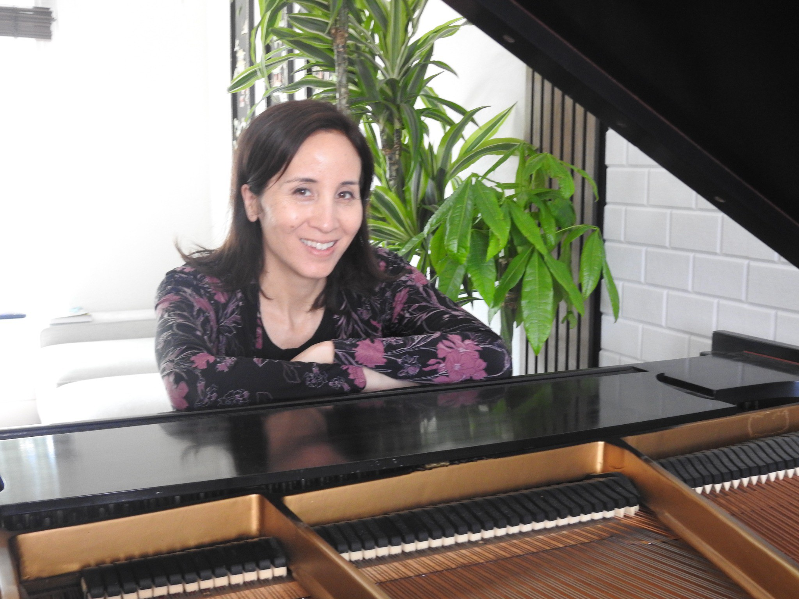
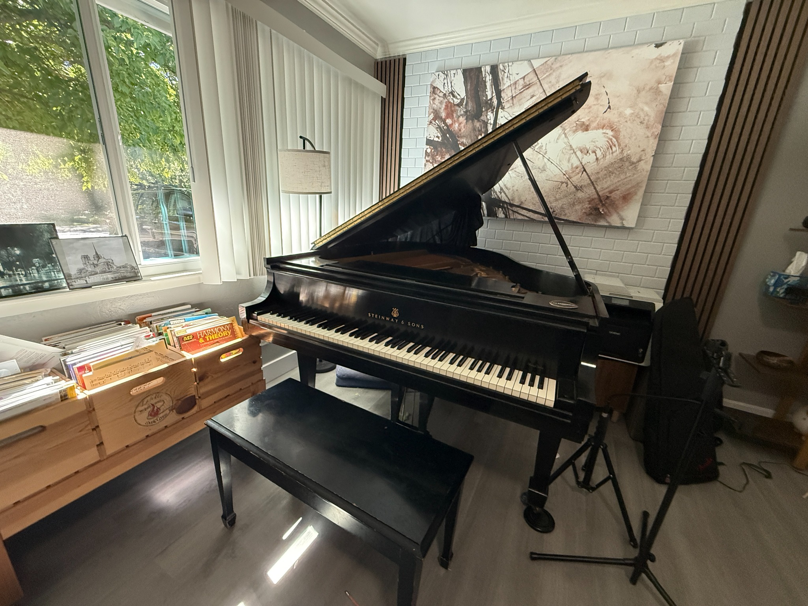
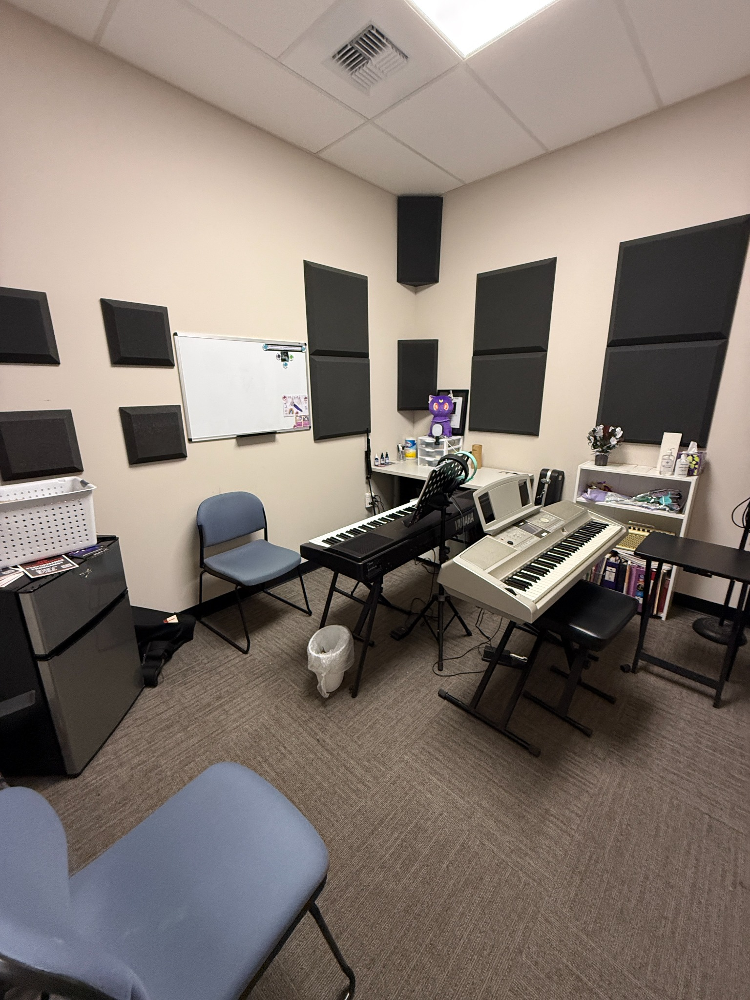

Listen first
Train the ear to notice pulse, form, patterns, bass, harmony, melody and musical color.
Piano lessons in Fair Oaks & Sacramento
Personalized piano lessons for kids, teens and adults — including autistic, ADHD and other neurodivergent learners.

Some students learn through notation. Some through sound. Some through movement, patterns, repetition, imagination or a favorite song.
The lesson should adapt to the student — not the other way around.The Ears & Keys approach
My goal is not simply to teach students which keys to press. I want them to understand what they hear and develop enough musical independence to read, improvise, play by ear, arrange, compose and express themselves.
Train the ear to notice pulse, form, patterns, bass, harmony, melody and musical color.
Sound, movement, visual cues, touch and pattern recognition can all become paths into music.
Technique and reading grow alongside ear training, musicianship and understanding.
Students can explore favorite songs, improvise, compose and build their own musical voice.
Neurodivergent learners are welcome here
I welcome autistic, ADHD and other neurodivergent students, including students who communicate, focus, process information or move differently.
For some students, success may begin with a traditional song or technique goal. For another, it may begin with choosing between sounds, copying a rhythm, recognizing a pattern, exploring the keyboard, responding to a favorite piece or simply building comfort and connection around music.
I adapt lessons around the individual student rather than forcing every learner through the same curriculum or expectations.
Where I teach

Ears & Keys • Fair Oaks
One-on-one piano lessons in my home studio with a Steinway grand piano.
Current availability: Tuesdays & Wednesdays
Ask about a home-studio opening
Skip's Music • Sacramento
I also teach piano and keyboard lessons at Skip's Music in Sacramento.
I teach there: Monday, Thursday, Friday & Saturday
View Skip's schedule & bookMeet Jordane
I began studying piano as a young child in the conservatory system and have spent years teaching students with very different goals, personalities and ways of learning.
My teaching grew beyond traditional note-reading because I kept seeing the same thing: students often knew what to press without fully understanding what they were hearing. I became increasingly interested in helping students develop the connection between the ear, the mind and the keys.
Today my lessons combine strong piano foundations with playing by ear, sight-reading, improvisation, pattern recognition, composition, movement and creative exploration.
From students & parents
Ears & Keys is the next chapter of my piano teaching. These comments come from students and families I previously taught through Frets & Keys.
“My daughter picked up so much so fast. Jordane made it joyful and simple! She's always excited to learn more.”— Claire, parent of a 10-year-old piano student
“Jordane teaches you to really hear music. I'm finally understanding songs from the inside out.”— Linda, adult piano student
“I'm almost 18 and finally feel like I'm playing music, not just notes. Jordane helped me find my own way into it.”— Jake, piano student
Contact Ears & Keys
You do not need to know what kind of lesson you need. Tell me who the student is, what they're interested in and anything that would help me understand how they learn.
For Fair Oaks home-studio lessons, current openings are on Tuesdays and Wednesdays. For other days, use the Skip's Music booking link above.